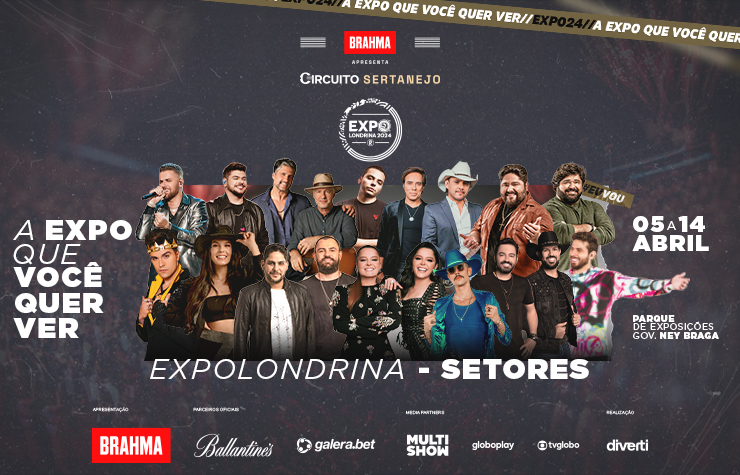

Expo Londrina.

A Expo Londrina é uma feira agroindustrial realizada pela Sociedade Rural do Paraná, na cidade de Londrina, norte paranaense, envolvendo agricultura, pecuária, indústria, shows e comércio.
Atrai pessoas de todas as regiões do Brasil. Geralmente a feira dura onze dias, com várias atrações, como festas, shows com cantores famosos, rodeio, parque de diversões, boa comida, leilões, feiras de artesanatos e culinária, festa de escolha da Rainha da expo.
Cultura.
A cidade de Londrina praticamente para em função da expo. Além dos agricultores e pecuaristas que vão até a feira pelo agronegócio, a feira também atrai pessoas comuns que estão dispostas a divertirem-se. A feira conta com programação cultural centrada, sobretudo, em shows de música sertaneja
Moda
A Expo Londrina influencia até a moda londrinense durante sua estadia na cidade. É comum notar as pessoas usando botas country, cintos com enormes fivelas e chapéu, dando o clima rural da exposição, complementada pela música sertaneja ao fundo.
Economia
A Expo Londrina movimenta mais de 600 milhões de reais em agronegócio todo ano. São negociados maquinários de última geração, animais de porte, como gado, cavalos entre outros, nos quais os preços podem passar facilmente de um milhão e meio de reais.
ExpoLondrina 2024
Em abril de 2024, os melhores artistas estarão na #ExpoLondrina, em uma arena de shows totalmente repaginada, novamente comandada pela Diverti.
De 05 a 14 de abril, no Parque Governador Ney Braga.
TODOS OS INGRESSOS (Arena, Camarote Super Bull Ballantine’s, Camarote Open Super Bull Ballantine’s, Camarote Brahma, Camarote Corporativo e Casa do Criador) INCLUEM ACESSO AO PARQUE, SEM NECESSIDADE DE COMPRA ADICIONAL.
PORTÕES DE ACESSO AO PARQUE FECHAM ÀS 00H.
A gratuidade é concedida para crianças com até 04 anos de idade. Obrigatória a apresentação de documento com foto ou Certidão de Nascimento na entrada do evento (catracas)
MENORES DE 0 ATÉ 15 ANOS PERMITIDA A ENTRADA SOMENTE ACOMPANHADOS PELOS PAIS (PAI OU MÃE) E REPRESENTANTES LEGAIS.16 E 17 ANOS PERMITIDA A ENTRADA DESACOMPANHADOS.
Programação de shows 2024
05/04 – Victor & Léo + Maiara & Maraísa.
06/04 – Zé Neto & Cristiano + Gustavo Mioto.
07/04 – Luan City 2.0 SUNSET.
11/04 – César Menotti & Fabiano.
12/04 – Jorge & Mateus + Guilherme & Santiago.
13/04 – Luan Pereira + Fernando & Sorocaba + Malifoo.
14/04 – Ana Castela SUNSET.
PARA COMPRAR SEU INGRESSO PARA A EXPO LONDRINA 2024, ACESSE.
Ingressos
PARA VER TODOS OS ARQUIVOS.
Acesse o GitHub para pegar os exemplos feitos